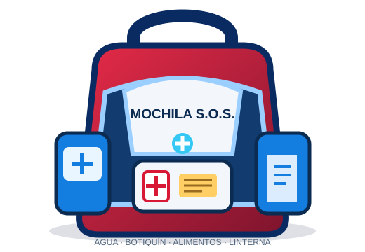
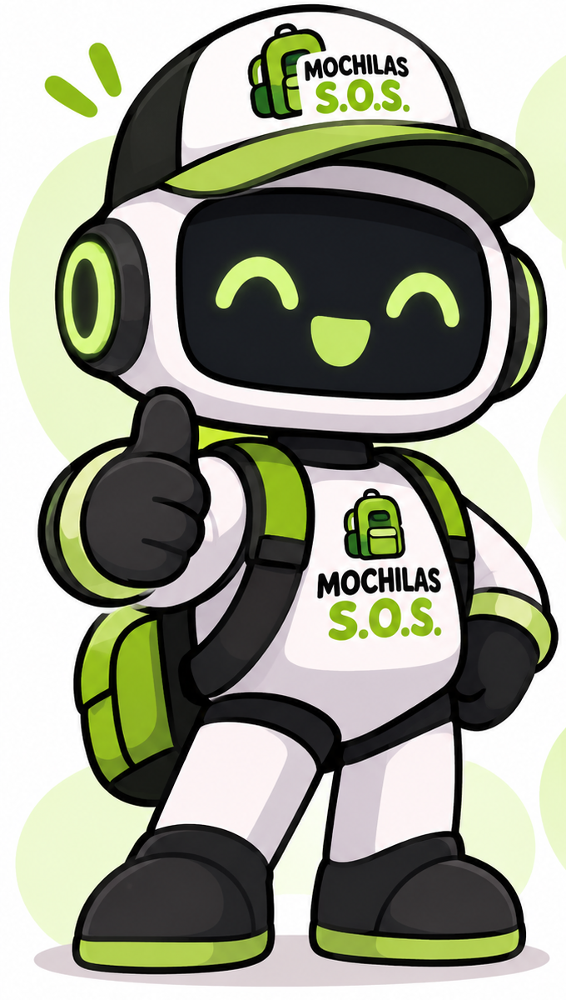

Contactos de emergencia · Perú
Selecciona el servicio que corresponda. Si no estás en Perú, confirma los números de tu localidad.
La disponibilidad puede variar según la zona y cobertura.Organiza tu mochila, conoce los riesgos y encuentra información confiable para prepararte ante una emergencia.
● Listas y recomendaciones básicas disponibles en este dispositivo.
Elige a cada integrante y revisa los artículos que necesita. Marca lo que ya está preparado.

Los artículos pueden variar según la edad, el clima y las necesidades de cada persona.
Prepara un pequeño kit personal para cada integrante que lo necesite. Mantén los productos en sus envases originales y añade recetas o indicaciones vigentes.
No cambies dosis ni tratamientos por esta guía. Consulta con un profesional de salud o veterinario para necesidades específicas.
⚠️ Adapta el contenido a las necesidades reales de tu familia. Para medicamentos, incluye únicamente los indicados por un profesional de salud.
Usa esta sección para consultar pasos básicos y preparar información útil. Si existe peligro inmediato, busca un lugar seguro y contacta a los servicios locales.
Selecciona el servicio que corresponda. Si no estás en Perú, confirma los números de tu localidad.
La disponibilidad puede variar según la zona y cobertura.Obtén las coordenadas de este dispositivo para comunicarlas a una persona de confianza o a los servicios de ayuda.
Aún no se ha solicitado.
Emite un sonido desde este dispositivo para llamar la atención si hacerlo es seguro.
El sonido no envía alertas ni contacta automáticamente a emergencias.Explora calles y registra un punto de encuentro familiar. Las capas de riesgo y seguridad son solo ejemplos editables.
⚠️ Las áreas coloreadas son ilustrativas y no indican peligro o seguridad reales. Antes de evacuar, sigue las alertas y rutas oficiales de las autoridades.
Información básica para reconocer fenómenos naturales y prepararte.
Pueden causar inundaciones, desbordes y deslizamientos.
El agua y el movimiento del suelo pueden afectar viviendas y caminos.
Ante una alerta, sigue las rutas de evacuación hacia zonas altas.
Busca refugio seguro y aléjate de espacios abiertos.
Los movimientos del suelo pueden ocurrir sin aviso previo.
El humo y el fuego pueden propagarse rápidamente.
Las recomendaciones son educativas. Para alertas actualizadas consulta fuentes oficiales como INDECI, SENAMHI e IGP.

ASISTENTE LISTOTu compañero para prepararte ante emergencias.
Este prototipo ofrece respuestas guiadas y voz del navegador. No es una IA generativa conectada ni reemplaza las indicaciones de las autoridades.
Encuentra fuentes confiables para informarte, prevenir riesgos y saber dónde consultar durante una emergencia. Selecciona una institución para conocer qué información ofrece.
Información sobre preparación ante emergencias, recomendaciones de seguridad, simulacros y qué hacer antes, durante y después de un desastre.
Visitar INDECI ↗ CLIMA Y PRONÓSTICOSPronósticos del tiempo, avisos meteorológicos y datos sobre lluvias intensas, temperaturas, vientos y otros fenómenos atmosféricos.
Visitar SENAMHI ↗ SISMOS Y CIENCIAInformación científica sobre sismos, actividad volcánica, monitoreo geofísico y conocimiento para comprender estos fenómenos.
Visitar IGP ↗ GESTIÓN DEL RIESGOMaterial sobre prevención, identificación de peligros y reducción del riesgo de desastres para comunidades y familias.
Visitar CENEPRED ↗Las páginas externas pueden requerir conexión a internet. La información de esta aplicación es educativa; sigue siempre las indicaciones oficiales de tu localidad.